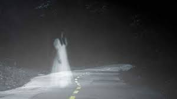

La leyenda de la niña de la curva es, sin duda, la más célebre de todas las historias de terror. No hay Halloween en que no se escuche esta misteriosa historia, y puede que haya sembrado el pánico en más de un Blablacar.
Como muchas historias populares, se desconoce su autor y la localización del suceso. Se cuenta en decenas de países. En Suecia donde se la conoce como Vita frun; en Italia, donde la llaman la Dama Bianca; en República Checa, que la bautizó Bílá paní...
En España, el suceso paranormal protagonizado por esta joven se ha ubicado históricamente en varios puntos geográficos: de la localidad sevillana de Sanlúcar la Mayor al municipio ibicenco de San Antonio.
Una noche de espesa niebla, un joven iba conduciendo por una carretera desconocida. Las luces del coche alumbraban lo poco que la niebla dejaba ver a su paso pero, de repente, una joven vestida de un blanco impoluto apareció a un lado de la calzada. Aunque la chica permanecía inmóvil, el conductor interpretó que estaba haciendo autostop y decidió parar para invitarla a subir.
La misteriosa joven accedió a subir al asiento de atrás del automóvil, aunque sin mediar palabra. Durante el recorrido, el conductor intentó entablar conversación sin éxito hasta que, de pronto, la joven dijo: "Cuidado con la curva. Ahí morí yo".
El joven, creyendo que era una broma, se giró hacia la chica y descubrió con estupor que ya no había nadie en el asiento. Cuando giró la cabeza hacia la carretera aterrorizado, ahí estaba. La curva.